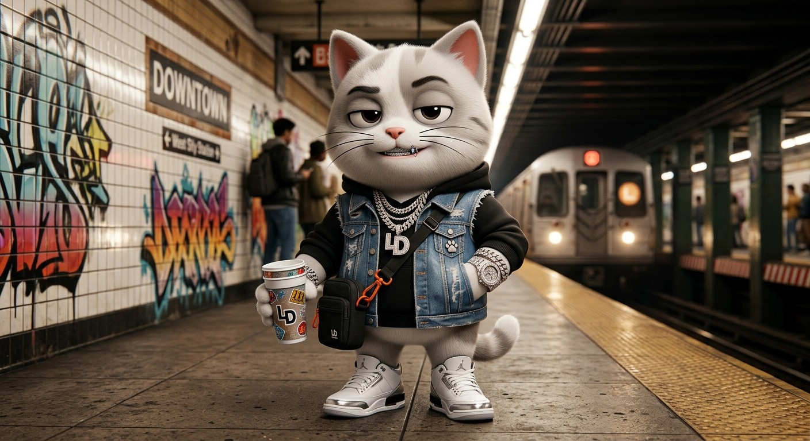
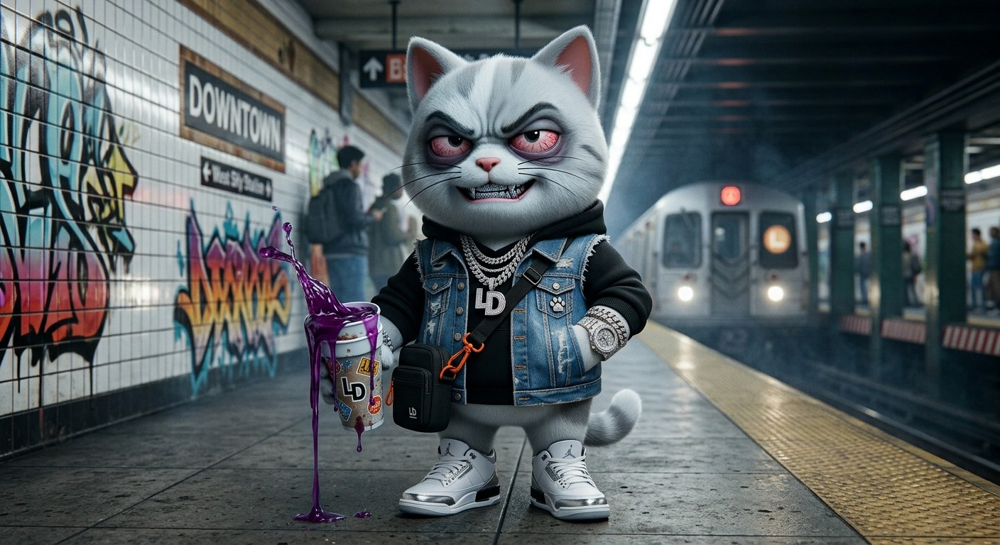
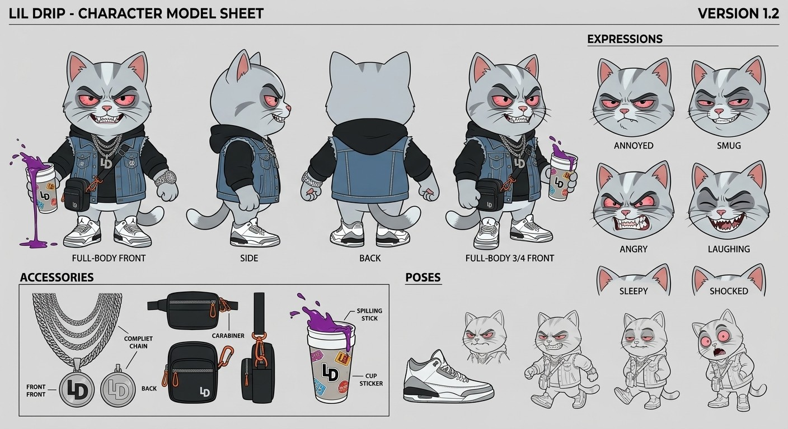

Lil
Drip
Missed the train. Not worried.
Platform announcementNext train: 12 min
Lil DripCool.

Crash-Out Mode
Then the app
said "Delayed."

Three modes.
One face.
Chill · Street · Crash-Out (used sparingly)
Still chill.
Train's late.